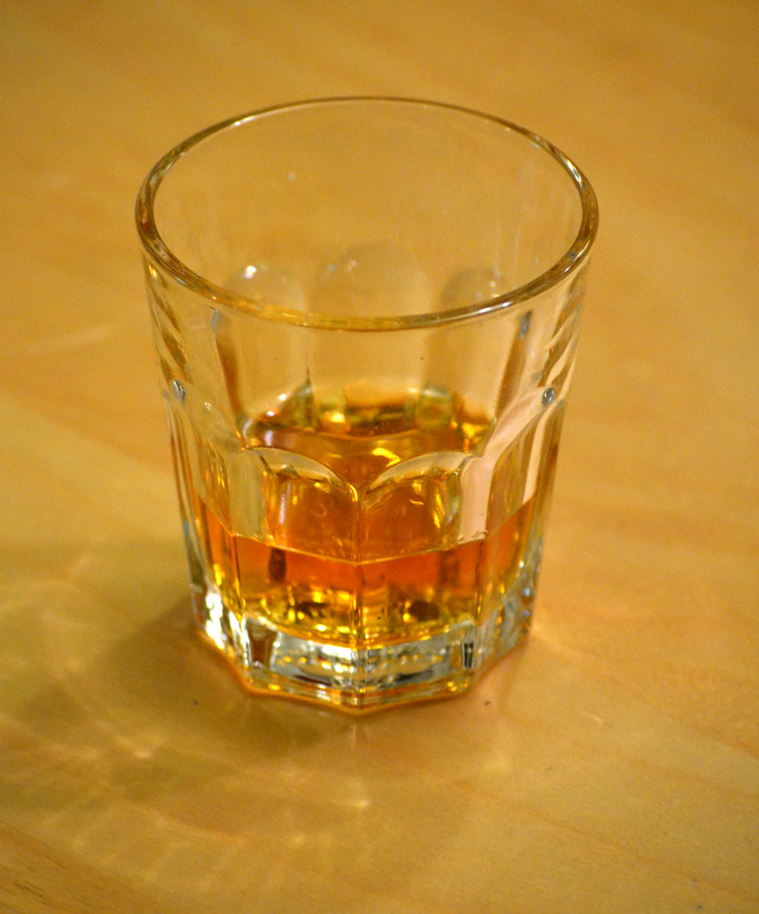
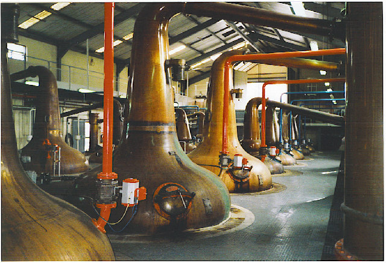
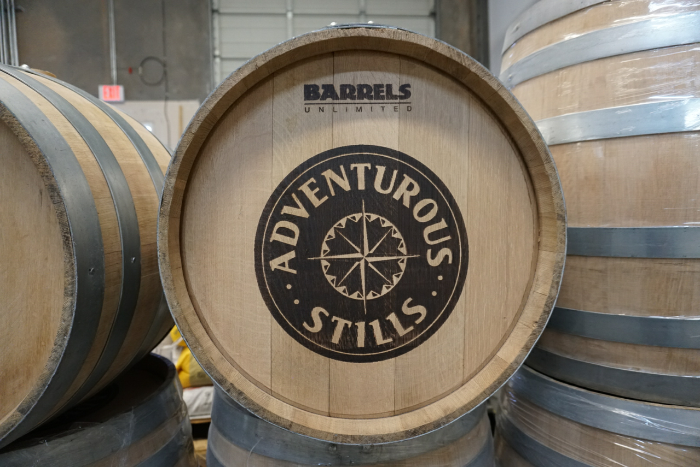
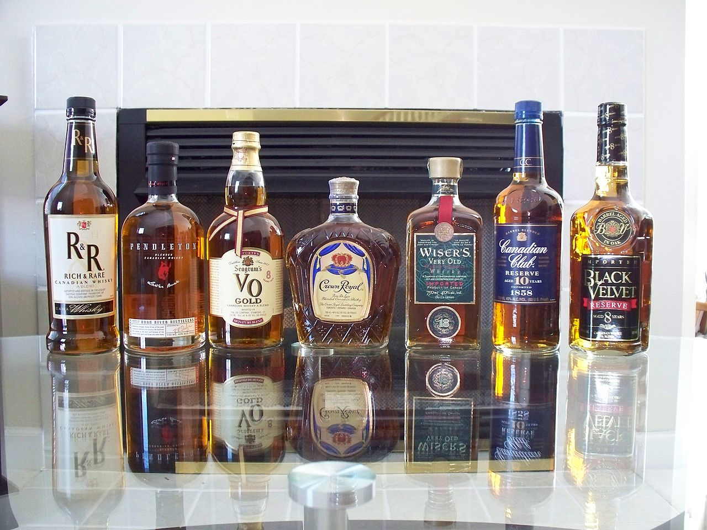

Welcome to my website!
You will find here some basics information about whisky production and its types! After reading all pages you can check your knowledge in a simple quiz. Enjoy!
What is Whisky(ey)?
Whisky or whiskey is a type of distilled alcoholic beverage made from fermented grain mash. Various grains (which may be malted) are used for different varieties, including barley, corn (maize), rye, and wheat. Whisky is typically aged in wooden casks, generally made of charred white oak.
Whisky is a strictly regulated spirit worldwide with many classes and types. The typical unifying characteristics of the different classes and types are the fermentation of grains, distillation, and aging in wooden barrels.
Production
Distillation
A still for making whisky is usually made of copper, since it removes sulfur-based compounds from the alcohol that would make it unpleasant to drink. Modern stills are made of stainless steel with copper innards (piping, for example, will be lined with copper along with copper plate inlays along still walls). The simplest standard distillation apparatus is commonly known as a pot still, consisting of a single heated chamber and a vessel to collect purified alcohol. Column stills are frequently used in the production of grain whisky and are the most commonly used type of still in the production of bourbon and other American whiskeys. Column stills behave like a series of single pot stills, formed in a long vertical tube. Whereas a single pot still charged with wine might yield a vapour enriched to 40–60% alcohol, a column still can achieve a vapour alcohol content of 95.6%; an azeotropic mixture of alcohol and water.
Aging
Whiskies do not mature in the bottle, only in the cask, so the "age" of a whisky is only the time between distillation and bottling. This reflects how much the cask has interacted with the whisky, changing its chemical makeup and taste. Whiskies that have been bottled for many years may have a rarity value, but are not "older" and not necessarily "better" than a more recent whisky that matured in wood for a similar time. After a decade or two, additional aging in a barrel does not necessarily improve a whisky. While aging in wooden casks, especially American oak and French oak casks, whisky undergoes six processes that contribute to its final flavor: extraction, evaporation, oxidation, concentration, filtration, and colouration. Extraction in particular results in whisky acquiring a number of compounds, including aldehydes and acids such as vanillin, vanillic acid, and syringaldehyde. Distillers will sometimes age their whiskey in barrels previously used to age other spirits, such as rum or sherry, to impart particular flavours.
Packaging
Most whiskies are sold at or near an alcoholic strength of 40% abv, which is the statutory minimum in some countries – although the strength can vary, and cask-strength whisky may have as much as twice that alcohol percentage.
Exports
Whisky is probably the best known of Scotland's manufactured products. Exports have increased by 87% in the decade to 2012 and it contributes over £4.25 billion to the UK economy, making up a quarter of all its food and drink revenues. In 2012, the US was the largest market for Scotch whisky (£655 million), followed by France (£535 million). It is also one of the UK's overall top five manufacturing export earners and it supports around 35,000 jobs. Principal whisky producing areas include Speyside and the Isle of Islay, where there are eight distilleries providing a major source of employment. In many places, the industry is closely linked to tourism, with many distilleries also functioning as attractions worth £30 million GVA each year. In 2011, 70% of Canadian whisky was exported, with about 60% going to the US, and the rest mostly to Europe and Asia. 15 million cases of Canadian whisky were sold in the US in 2011.
Go to next page!